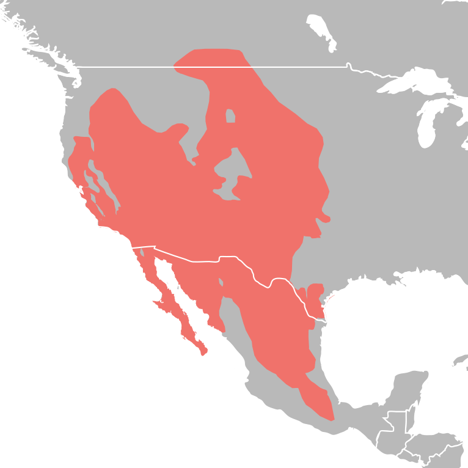

Quick Facts
- Size: 3-6 inches, excluding tail
- Weight: 1-6 ounces
- Lifespan: 2-5 years
- Conservation Status: Endangered
- Range: Arid regions of western North America
Key Nighttime Adaptations
Kangaroo rats have extremely specialized ears that allow them to hear the low-frequency sounds of their predators searching for them or preparing to strike. Their large, powerful hind legs allow them to move quickly in the night, escaping predators with one jump and disappearing into the darkness.
Diet
They primarily survive on seeds and grains. They never have the need to drink water as they get enough moisture from the seeds and grains they consume.
Role in Ecosystem
They are a valuable food source to larger predators and help distribute seeds during their travels across the vast desert.
Fun Fact: Kangaroo rats do not sweat at all and produce urine four times more concentrated than humans, thanks to their specialized kidneys. These functions help them conserve every drop of water in the brutal desert climate.


Light Pollution's Effect on Kangaroo Rats
Kangaroo rats thrive on complete and total darkness. They often obtain little to no food from foraging during full moons and instead conserve energy until a darker time. Artificial light can mimic the full moon and prevent them from foraging at all, causing them to starve to death.